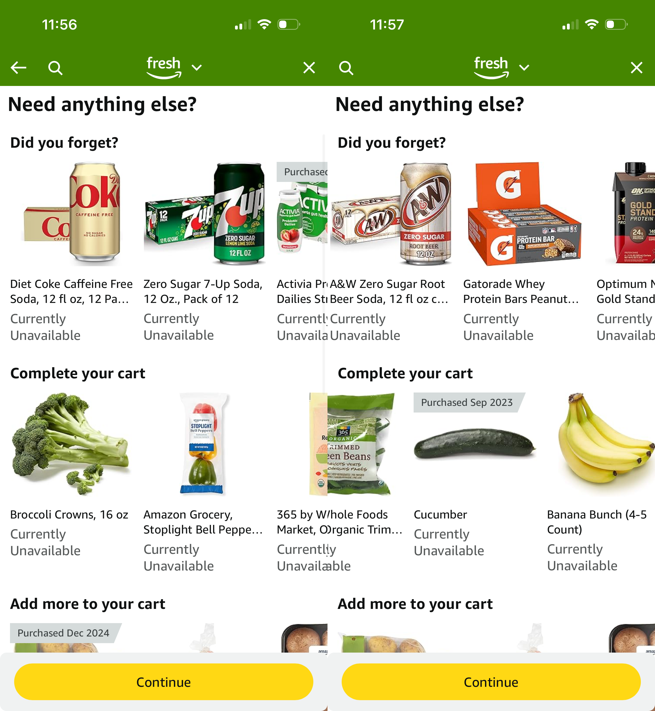

I opened Amazon Fresh to reorder my usual groceries. Bananas: currently unavailable. Honeycrisp apple: currently unavailable. Greek yogurt: currently unavailable. Broccoli: currently unavailable. The app scrolled on. Everything in “Did you forget?” and “Complete your cart”; every single item my purchase history suggested: currently unavailable.

Yesterday I wrote about their two-cart checkout problem. That was organizational incompetence; two checkout flows where there should be one. This is something worse: a delivery service that doesn’t deliver things. I don’t have a car. I’m sick. I needed groceries. Amazon Fresh is what I had.
I don’t know what happened on their end and frankly I don’t care anymore. What I know is the app still shows my purchase history, still surfaces recommendations, still asks “did you forget?” and stamps “Currently Unavailable” on every single one. Bananas. Broccoli. Greek yogurt. Things I buy every week. Gone. No explanation. No banner. No redirect. Just a green app cheerfully suggesting things it cannot provide.
That’s not a bug. That’s contempt. A functioning company tells you when it can’t serve you. Amazon would rather waste your time than admit it failed.
If you can’t deliver it, don’t show it. Each item probably fires its own availability check on render; when the fulfillment backend hiccups, every card goes red simultaneously and it looks like a personal problem instead of their outage. Filter on the backend. Time to first pixel means nothing if I can’t buy it. The recommendation engine knows my purchase history; it should also know what it can actually get to my door. Showing me what you can’t deliver isn’t personalization; it’s gaslighting. If you’ve pulled back from my market, say so. One banner. One redirect. An intern could ship this before lunch.
Instead Amazon chose to leave a broken interface running and let customers figure it out themselves. That’s not a product decision. That’s abandonment.
I’m trying Walmart and Safeway next, probably through Instacart. Yes, Instacart marks up prices and charges delivery fees. I don’t have a car; the alternative is an Uber to a grocery store, which costs more and requires leaving the house while sick.
I don’t shop at Whole Foods or any store that scans me; Amazon’s surveillance retail isn’t something I participate in. Amazon Fresh delivery was the one Amazon grocery option I was willing to use. Instead I got a carousel of things I can’t have, from a company too negligent to tell me it had stopped serving my neighborhood.
Amazon lost a customer. They didn’t notice when it happened and they won’t notice now.
Previously: Amazon Has a Broken Thing
Read and subscribe on Substack